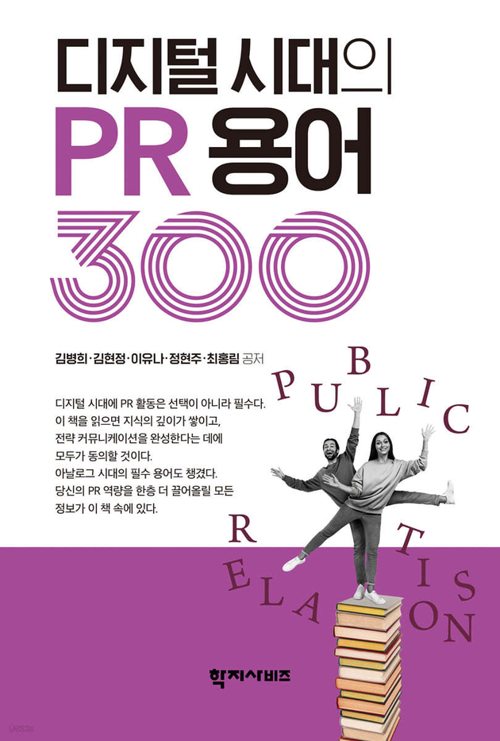
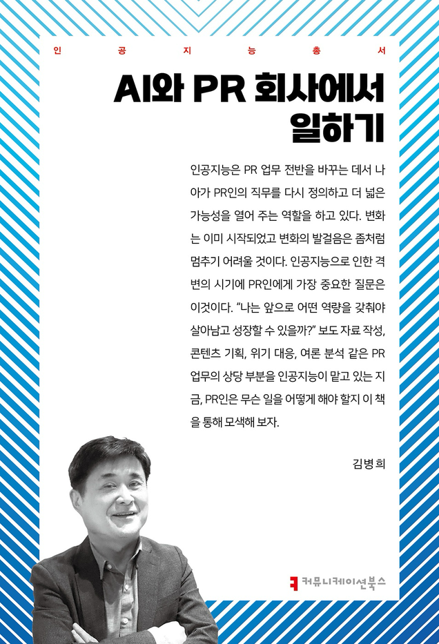
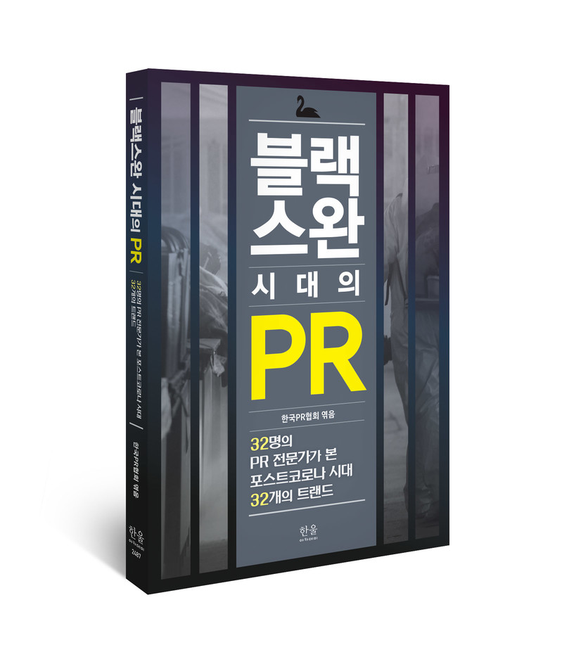

홍보담당자, 언론인, PR대행사 실무자가 함께 업계 인사이트와 실무 경험을 공유합니다.
생성형 AI가 보도자료를 요약·인용하기 시작하면서, 홍보실의 문장 하나가 검색과 AI 답변으로 확산된다. 지금 준비할 것을 짚었다.
초안 작성부터 매체 매칭·배포까지 — PR 실무를 돕는 AI 도구를 지금 사용해 보세요.



커뮤니티에 실무 질문을 남기고, 유용한 자료와 기사를 저장하고, 같은 고민을 하는 실무자와 연결되세요. 가입하면 더 많은 정보를 확인할 수 있습니다.